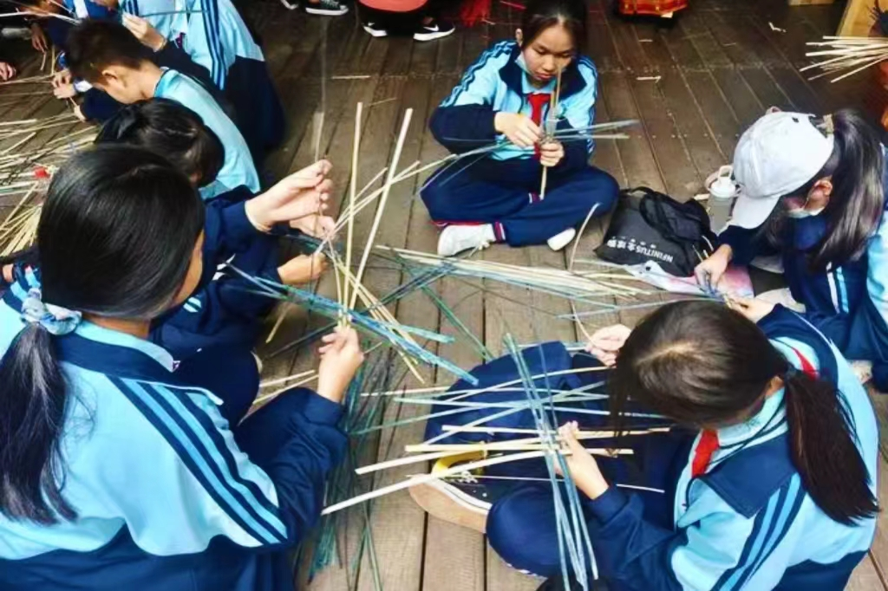
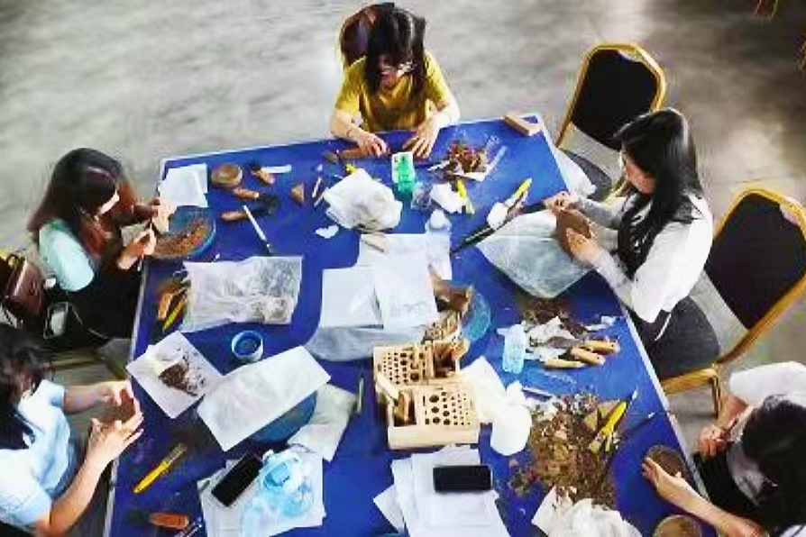
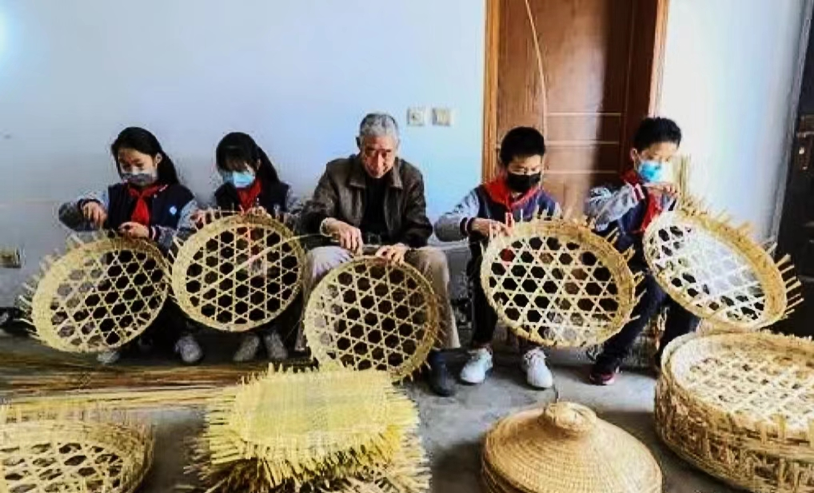

竹学
竹学———云上体验
点击图片可以进入云上竹编平台，浏览竹编活动或项目选择一个想要参与的竹编活动或项目，进入活动或项目页面。在页面中，浏览相关的教学视频或文本教程，了解竹编的基本知识和技巧。准备所需的竹编工具和材料，可以在本地购买或在平台上在线购买。开始竹编过程，按照教学视频或文本教程指引进行操作。在竹编过程中，如果遇到问题可以在平台或App上查看相关的教学视频或文本教程。完成竹编作品后，在平台或App上提交作品照片或视频。等待工作人员的审核，如果作品符合要求，就能获得相关的证书或奖励。在云上竹编平台或App上，可以与其他竹编爱好者交流、分享作品或学习经验，共同进步。
竹学———旅游研学




研学意义：
1、传承文化：竹编是中国传统手工艺之一，具有悠久的历史和丰富的文化内涵。通过研学竹编，可以了解和传承中国传统文化，增强对民族文化的认同感和自豪感。
2、培养动手能力：竹编需要进行细致的编织和构思，培养了学生的动手能力和创造力。通过亲身参与竹编制作，学生可以锻炼手脑协调能力，提高动手能力和创造力。
3、培养团队合作精神：竹编制作通常需要多人合作完成，每个人负责不同的环节。通过竹编研学，学生可以学会与他人合作，分工合作，培养团队合作精神和沟通能力。
4、增强环保意识：竹编是一种环保的手工艺，竹子是可再生资源，不会对环境造成污染。通过研学竹编，学生可以了解到竹子的特点和利用价值，增强对环保的意识和保护环境的责任感。